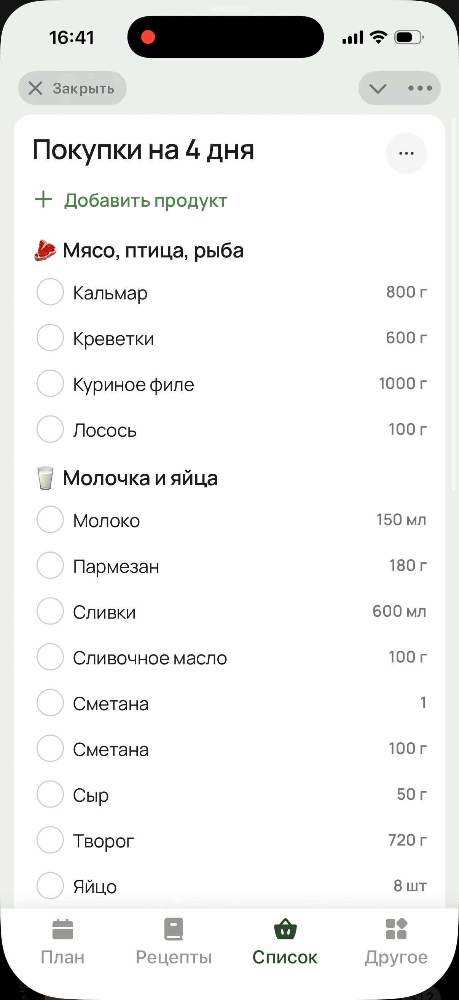

Ясми: от хранения рецептов к готовому меню
Ясми предлагает меню на несколько дней. Можно заменить блюда, изменить порции и получить список покупок по своему плану.
Открыть Ясми в TelegramО проекте

сначала я собирала рецепты
Когда дома заканчивалась еда, мы с партнёром снова обсуждали, что приготовить. Я искала рецепты и составляла список покупок. Мне казалось, что выбирать будет проще, если собрать любимые блюда в одном месте. Так появилась первая схема Ясми.
- 01сохранить рецепт
- 02составить меню
- 03получить список покупок
Я хотела понять, в какой момент другие люди решают, что приготовить, и помогают ли им сохранённые рецепты.
труднее всего решить, что приготовить
В январе я провела онлайн-опрос через чаты, Instagram и UX-сообщества. Из 69 ответов отобрала 50: эти участники регулярно готовят дома и сталкиваются с трудностями при планировании еды.
В этой группе чаще всего отмечали, что трудно решить, что приготовить. Обычно участники планировали еду на два-три дня или выбирали по настроению. В вопросе о рецептах 19 из 50 выбрали «Нигде не сохраняю, решаю на ходу». Для Ясми это тоже конкурент: ужин можно придумать и без приложения.
Я начинала с идеи библиотеки рецептов. После опроса у меня появился вопрос для интервью: когда в последний раз нужно было придумать ужин, что помогло выбрать конкретное блюдо?
Число участников из 50. Можно было выбрать до трёх вариантов.
50 участников, один вариант ответа.
Из 50 участников; можно отметить несколько источников. Показаны выбранные варианты.
- Поисковик
- 33 из 50
- Instagram / TikTok
- 27 из 50
- Telegram / ВК
- 19 из 50
- Приложения с рецептами
- 3 из 50
В анкете Telegram и ВК были одним вариантом ответа. Об использовании самого Telegram участницы рассказали на интервью.
Выбранный срез, N = 50. Полосы показывают долю от 50 участников. Добровольная выборка с фокусом на трудностях планирования; результаты нельзя обобщать на всех, кто готовит дома.
интервью: как выбирают еду
Метод. Четыре исследовательских интервью, март 2026. Приглашала из оставивших контакты в анкете. Разбирали последнюю готовку и закупку: повод, действия, варианты и причины выбора.
Выбор начинается, когда заканчивается еда
Одна участница выбирала следующее блюдо после последней порции, другая — по дороге домой. Вспоминали знакомые блюда, учитывали усталость и продукты дома. Сохранённый рецепт ещё не решает, что готовить сейчас.
План меняется вместе с обстоятельствами
Участница бросила недельное планирование: хотелось другой еды, скидки меняли выбор мяса, продукты заканчивались. Другая не возвращалась к меню от нейросети. Получить план и пользоваться им — разные задачи.
Помощь нужна не всем, кто готовит
Одну участницу всё устраивало: решения с партнёром, закупки надолго, таблица на холодильнике. Для дальнейшей проверки важны люди, которым трудно выбирать блюда или поддерживать планирование.
Ясми предлагает первое меню
В первом варианте планировщика человек сам выбирал каждое блюдо. После интервью я поменяла первый шаг. Теперь человек открывает готовое меню и решает, что оставить на ужин. Так мы проверяем, проще ли выбрать из предложенного.
- 01посмотреть предложенное меню
- 02оставить блюда или изменить план
- 03собрать список покупок
как заменить блюдо в меню
Чтобы заменить завтрак, выберите другое блюдо и нажмите «В план». А если нужно дополнить меню на несколько дней, важно сохранить то, что вы уже выбрали. Допустим, на ужин у вас суп на две порции, а завтрак вы убрали.
Дополнить меню. Ясми подберёт блюда для свободных мест. Суп останется на две порции, а удалённый завтрак не появится снова.
Собрать меню заново. Ясми заново подберёт все блюда на выбранные дни, включая ужин, для которого вы уже выбрали суп.
Свои рецепты получают приоритет в подборе. Если подходящего блюда нет, слот остаётся пустым: ограничения питания важнее заполненного меню.

покупки из плана
Список собирается на весь период плана — здесь на четыре дня. Продукты сгруппированы по категориям; купленное можно отмечать.
Покупки прямо в Telegram
Список можно получить сообщением в боте. Он сохраняет группы продуктов; рядом доступно действие «Всё куплено».
рецепт из ссылки
Я бросила приложение для рецептов после двух записей: устала переписывать ингредиенты. Поэтому в Ясми свой рецепт можно добавить по ссылке.
Например, вы отправляете боту ссылку на том ям. Бот собирает рецепт, а вы проверяете ингредиенты, при необходимости исправляете их и выбираете день для готовки.

что показали первые тесты
Я попросила двух участниц попробовать рабочую версию Ясми. На тестах стало видно, где интерфейс сбивал их с толку.
Период плана оказался неочевидным
Наблюдение. Участница приняла план на три дня за меню на сегодня.
Изменение. Добавили выбор срока в онбординг. В самом плане подписи периода пока нет; достаточно ли этого изменения, проверим повторно.
Покупки и план — не всегда один период
Наблюдение. Купить на завтра и закупиться надолго — разные задачи. Список на весь план не всегда совпадал с ожиданиями.
Изменение и ограничение. Указали период покупок. Выбор отдельного срока пока не добавляли: короткую закупку внутри длинного плана это не решает.
Отметка покупки не должна менять положение строки
Наблюдение. Отмеченные продукты прыгали по списку, участница теряла их из виду.
Изменение. Отметка купленного больше не меняет порядок строк.


Статус проверки. Повторных тестов ещё не было. Исправления проверяю сама в повседневном использовании; так нашла и устранила дополнительные сбои покупок.